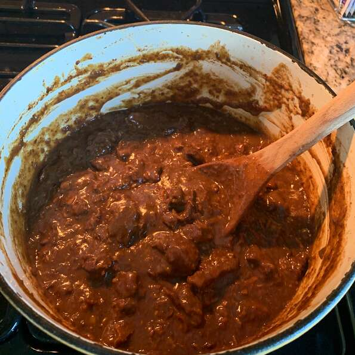

Texas Chili

Description
This chili contains no onions, beans or tomatoes. It is even better the next day.
Season to your tastes as it may be too spicy for you. You can also add pinto beans,
sour cream and lime juice, if desired.
Ingredients
- 3 pounds boneless beef chuck roast - cut into 1 inch cubes
- 2 tablespoons olive oil
- 3 cloves garlic, minced
- 3 tablespoons chili powder
- 3 tablespoons chili powder
- 3 tablespoons all-purpose flour
- 1 tablespoon dried oregano
- 2 (14 ounce) cans beef broth, divided
- 1 teaspoon salt
- ¼ teaspoon ground black pepper
Steps
- Heat the oil in a large skillet over medium high heat. Saute the beef cubes in the oil for 2 minutes. Reduce heat to medium and stir in the garlic.
- In a small bowl, combine the chili powder, cumin and flour. Sprinkle over the meat and stir until evenly coated. Crumble the oregano over the meat and pour in 1 1/2 cans of the broth.
- Add the salt and ground black pepper, stir together well, bring to a boil, reduce heat to low and let simmer, partially covered for about 90 minutes. Pour in remaining broth and simmer 30 minutes more, until meat begins to fall apart. Cool, cover and refrigerate to allow the flavors to blend.